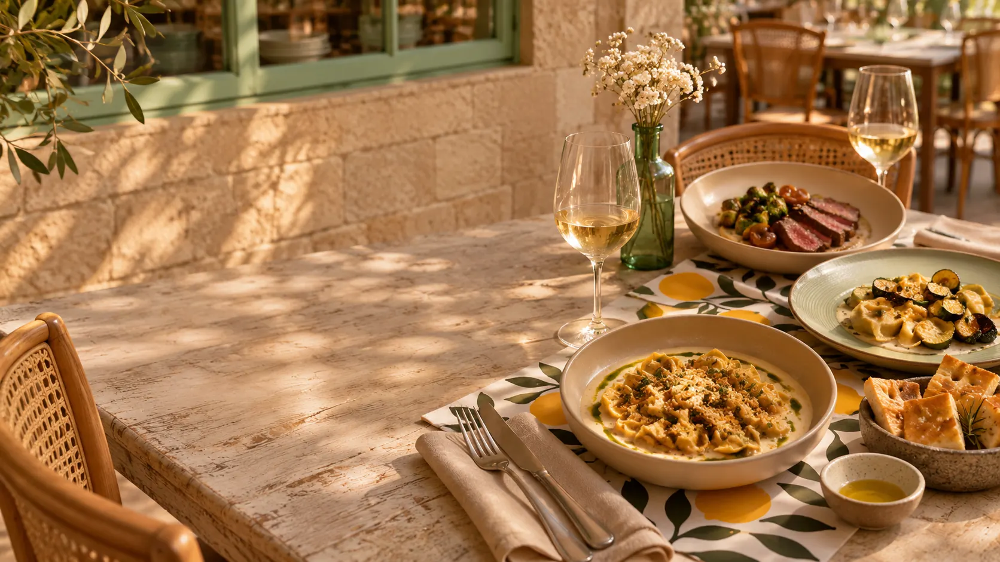
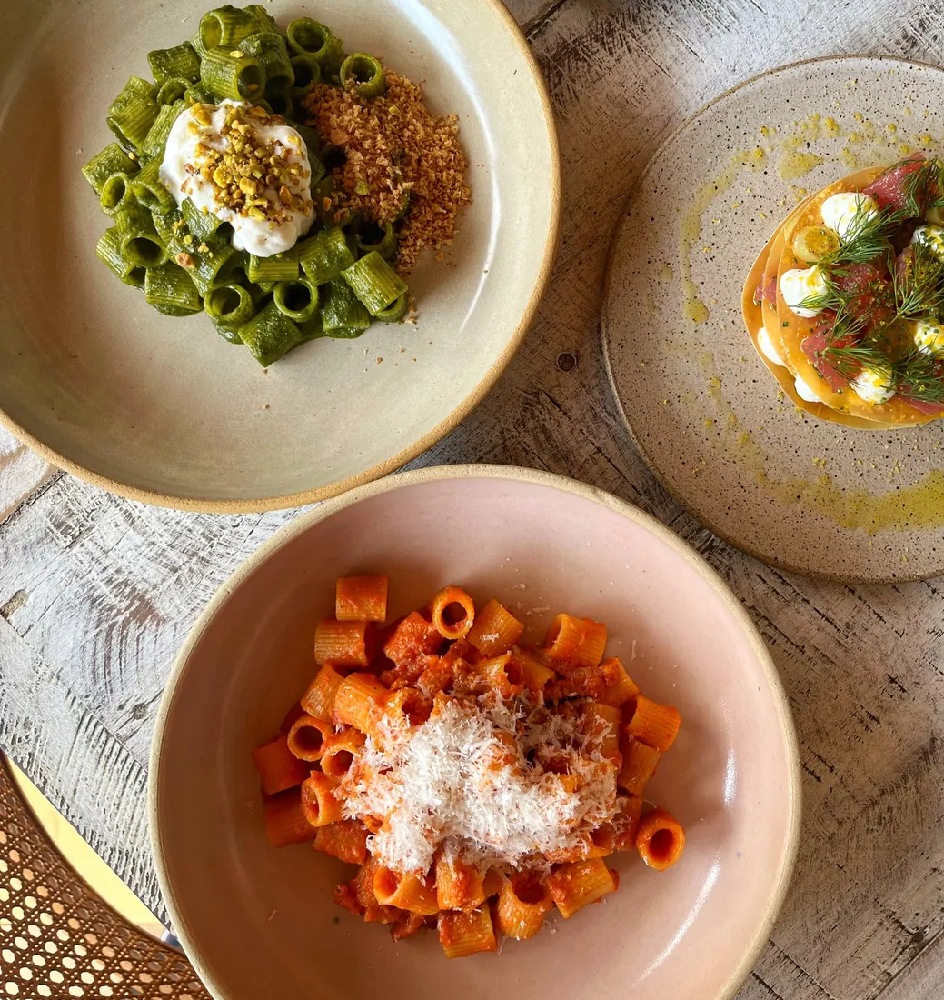
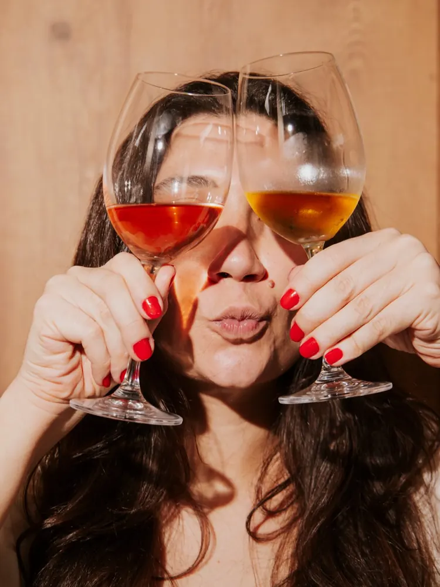

Cardápio
Massas frescas, pizzas de forno e bons encontros.
Cozinha italiana, vinhos escolhidos pela sommelière e pães da casa, entre a madeira, as plantas e a varanda da Água Fria.
Abrir o cardápioO cardápio
Folheie com calma
Capa
Arraste a página, use as setas ou toque nos marcadores.
Para compartilhar
Antipasti

Cacio & pepe arancini R$ 53
Bolinhos de risotto cacio & pepe, peito de pato curado na casa.
Panzanella R$ 76
Tomate tostado, alcachofra, ricotta, cebola roxa, chili crisp, manjericão e focaccia crocante.
Burrata R$ 74
Com picles doce de tomate, pesto da casa, castanha de baru e focaccia de fermentação natural. Pode acompanhar prosciutto ou escabeche de abobrinha (R$ 20 | R$ 14).
Bolovo de bacalhau R$ 53
Ovo caipira com gema mole envolto em massa de bacalhau e tapenade de azeitonas.
Mil-folhas de atum R$ 88
Crudo de atum, azeite de laranja, coalhada de ovelha, uvas assadas e bottarga entre camadas crocantes de massa filo.
Carne cruda R$ 79
Coxão mole angus na ponta da faca, azeite extravirgem, alcaparra, queijo tulha e aioli. Acompanha focaccia de fermentação natural.
Polvo e sardella R$ 97
Polvo e cebola chalota tostada em conserva de azeite, sardella da casa, salada de salsa, aioli levemente picante e siciliano. Acompanha pão de fermentação natural.
Salada da casa R$ 68
Alface romana, erva-doce, focaccia, manjericão, laranja bahia e queijo tulha.
Principais
Massas frescas e pratos da casa

Pesto e pistacchio R$ 83
Mezze rigate, pesto da casa, stracciatella, siciliano, pistache e pangrattato.
Amatriciana R$ 92
Mezze rigate, molho de tomate da casa, peperoncino, guanciale e queijo de ovelha.
Ravioli doppio R$ 86
Pasta fresca recheada com creme de milho doce, ricota fresca e espinafre. Finalizada na manteiga e queijo araritaguaba.
Spaghetti al mare R$ 87
Spaghetti alla chitarra, lulinhas na manteiga de ervas, crudo de atum e bottarga.
Papardelle & portobello R$ 79
Pasta fresca, portobello, espinafre aglio & olio, manteiga noisette e ricota fresca.
Tortelli di ossobuco R$ 82
Pasta fresca recheada com ragu de ossobuco bovino, manteiga noisette, queijo tulha e melaço de cebola.
Caramelle R$ 89
Pasta fresca recheada com ragu de copa lombo suíno ao pomodoro, fonduta de coalhada de ovelha e pangrattato.
Orecchiette R$ 86
Pasta grano duro feita na casa, linguiça finocchiona, friarielli, peperoncino, pangrattato e queijo de ovelha.
Lasagna R$ 90
Pancetta curada, queijo tulha, cogumelos e compota de tomates entre camadas de pasta fresca e fonduta de gorgonzola dolce.
Cotoletta alla milanese R$ 93
Prime rib suíno empanado e frito em migas de pão da casa, picles de mostarda e aioli. Acompanha salada da casa.
Coda alla vaccinara R$ 88
Rabada cozida lentamente, polenta taragna cremosa, alho crocante e saladinha de agrião.
Pizzas
Do forno

Marguerita R$ 65
Pelati, mozzarella, queijo tulha, picles doce de tomate e manjericão.
Calabresa R$ 68
Pelati, calabresa, queijo tulha, pétalas de cebola, tapenade de azeitonas, salsa verde e pimenta calabresa.
Quatro queijos brasileiros R$ 69
Pizza bianca. Queijo tulha Atalaia, mozzarella Roni, requeijão de corte Atalaia e gorgonzola dolce Serra das Antas.
Caprese R$ 66
Pelati, stracciatella, tomatinhos confit, pesto da casa e tapenade de azeitonas.
Pesto & patate R$ 69
Pesto de manjericão, cebola roxa, requeijão de corte, caciocavallo, tomilho fresco, limão siciliano e batatas assadas com alecrim.
Carciofi R$ 71
Pelati, alcachofra, mozzarella, tapenade de azeitona e manjericão.
Prosciutto e alho negro R$ 71
Pelati, prosciutto, alho negro, mozzarella, gorgonzola dolce, rúcula selvática e figo.
Zucchine R$ 67
Pelati, mozzarella, queijo tulha, escabeche de abobrinha, coalhada de ovelha e ciboulette.
Cipolla R$ 69
Pizza bianca, mozzarella, requeijão de corte, cebolas tostadas, creme de cebola, melaço de cebola e ciboulette.
Finocchiona R$ 72
Pelati, mozzarella, finocchiona, queijo tulha, cogumelo portobello e cavolo nero.
Pancetta R$ 72
Pelati, pancetta curada, requeijão de corte, gorgonzola dolce e espinafre aglio & olio.
*Consultar opções veganas com a nossa equipe.
Sobremesas
Para fechar a mesa
Tiramissu R$ 49
Camadas de bolacha champagne embebida em café e marsala, creme de mascarpone, cacau e nibs de cacau.
Torta de ciocolatto R$ 56
Torta cremosa de chocolate 75%, frangipane de laranja e suprême de tangerina.
Pavlova R$ 44
Pavlova de morango, merengue, geleia de morango, chantilly fresco, creme pâtissière e creme anglaise.
Cannolo R$ 26
Amarena ou pistache.
Encomende nossos pães
Forneria · por encomenda

Focaccia tomilho & alecrim R$ 58
Focaccia azeitonas R$ 68
Focaccia pesto & coalhada de ovelha R$ 68
Tortano R$ 72
Encomendas com 24h de antecedência, para retirar na Elea em horário combinado.
Vinhos
A carta da sommelière


Uma carta de vinhos pensada pela sommelière Manuela Fernandes para acompanhar a cozinha da casa.
A carta completa estará disponível aqui em breve. carta de vinhos (rótulos, taças e garrafas, com preços) a receber da Elea
Peça uma sugestão à nossa equipe no salão.
Valores em reais (R$).
Forneria · por encomenda
Focaccias e tortano por encomenda
Aproximadamente 900 g de focaccia artesanal
Feita à mão na casa, em porção generosa para dividir à mesa.
- Encomende com no mínimo 24h de antecedência.
- Retire na Elea, em horário combinado.
Peso médio por unidade: pode variar um pouco, como todo pão artesanal.